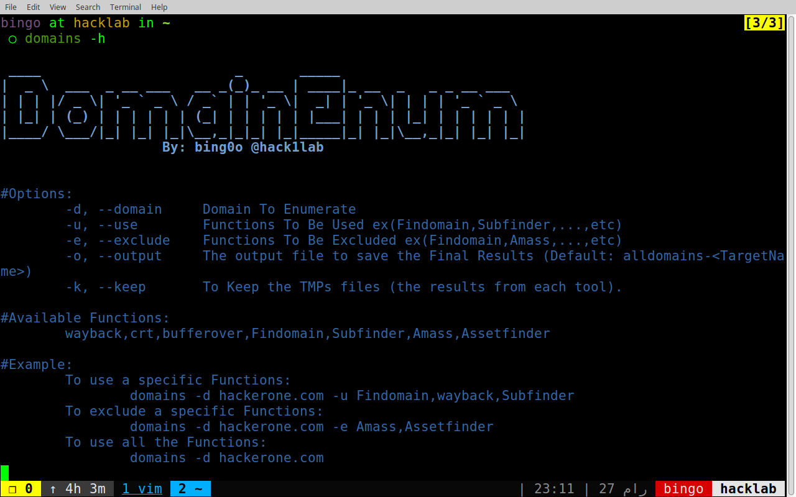

hello Hackers, this is the first post on my blog, I’m still not an expert in bug hunting, but hope this will be useful for some of you, I’m gonna talk about Recon on Targets with a large scope and how to collect its domains, subdomains and IPs.
As you all know Recon is the first stage when you’re doing a penetration testig or bug hunting, and if you can get an information ( domain/ip/github account … and so on) other hackers didn’t reach to it yet, it’s a great advantage for you to find an application that hasn’t been scanned yet and find a vulnerability and get a bounty, sounds great right! :D
we’re going to do recon in 3 stages:
- Finding SubDomains.
- Finding Domains related to the same Target.
- Finding IPs.
Finding SubDomains:
let’s say our target is target.com and we want to get all possible subdomains like api.target.com and admin.target.com … Etc, there’s a lot of tools to do that but i’m gonna pick some of them ( based on my own opinion ), and we’re gonna use a bash script to use these tools and combine the results and sort them into one file!
Automate The Process:
Automation is your best friend ;)
so we’re gonna use 4 tools and 3 APIs:
basically, you can use each tool or API separated, then combine the results, but this gonna take time and not productive for me.
so I made a bash script to automate this and make it handy and easier, you can use a specific tools or exclude a specific once as you like: domains.sh

don’t forget to use a brute force tool like
knockpyto find more subdomains especialy if you use a custom wordlist.
Finding Domains related To The Same Organization:
this means if the main domain of our target is target.com and we got all the subdomains of that domain, but maybe our target own other domains like testarget.com, shitarget.com … etc, we need to find those too.
in this stage we’re gonna use a reverse whois lookup, first we do a normal whois against target.com, and i use viewdns.info to get the Registrant (Name OR Email Address) Email Address Recommended here , we’re gonna need one or both of this informations to do a reverse whois lookup and get all the domains that registred using that name or email address.
there’s more than one way, but i’m gonna use some APIs to collect the domains, and here some of them:
viewdns.info: this website is good but it gives you only the first 500 results for free and you have to pay for the rest, so if your target has more than that as domains, it’s not good for you.
whoisxmlapi.com: I used this API lately and I liked it, it’s free and very good, but I’m not sure if it’s limited or not!, but at least it does the job :).
Let’s bash it:
since we’re gonna use whoisxmlapi.com API, first you have to create an account and get your API KEY.
let’s make a bash scrip to get the results:
1
2
3
4
5
6
7
8
9
10
#!/bin/bash
#check if the first argument doesn't exist.
[ -z "$1" ] && { echo "[!] ./alldomains.sh <Registrare Email/Name>"; exit 1; }
curl -s -XPOST https://reverse-whois-api.whoisxmlapi.com/api/v2 -d \
'{"apiKey": "YOUR_API_KEY","mode": "purchase","basicSearchTerms": {"include": ["$1"]}}' |
tr ',\|[' '\n' |
cut -d '"' -f 2 |
grep -v "domainsCount\|domainsList"
don’t forget to change YOUR_API_KEY with your API key :)
save this in a file then run:
1
./alldomains.sh domains@target.com > domains.txt
PS: domains@target.com we got this from the previous stage (whois lookup)
you can use Amass for reverse whois lookup, but TBH it gives some false positive results.
here don’t forget that you have to do the first stage again
subdomains findingwith this new domains, and get more results, It gets bigger :D.
Finding IPs:
here’s two ways to get list of IPs:
Using Amass:
you can use amass to get the IP for each subdomain or domain you find using this tool like this:
1
amass enum -d target.com -ip -o results.txt
this will give you the IP of each SubDomain and save the results in results.txt file.
Using ASN:
Recomended
first you need the ip address of your target.com, then use this site to get autonomous system number (ASN), we’re gonna use this number to get a bunch of CIDRs owned by our target,
Enter the IP address in the search bar and you will get something like this:
| Announced By | ||
|---|---|---|
| Origin AS | Announcement | Description |
| AS1X1 | 192.168.32.0/19 | Target Services, Inc |
the result of Announcement is The CIDR, click on the result of Origin AS you will find some more AS numbers related to the organization, but be carefull, don’t get out of scope, if your scope only for Target Services. Inc , you have to exclude Target Corp, Inc …. etc.
here is a python script to translate CIDR to a list of IPs:
1
2
3
4
5
6
7
8
9
10
11
12
13
14
15
#!/usr/bin/env python
import ipaddress, sys
try:
cidr = sys.argv[1]
except:
print("[!] Usage: ips <CIDR>")
exit(1)
ips = ipaddress.ip_network(unicode(str(cidr)))
for ip in ips:
print(ip)
lately i found more than 380+ CIDR for my target, the list of IPs got more than 44 million IP, of course not all of them are UP, and i had to filter them, but hey with tools like masscan and zmap it’s not a problem at all it tooks just a few minutes to go through the list and scan ports 80,443 :D
conclusion:
well, let’s see:
- finding the SubDomains: Done.
- finding domains: Done.
- Finding IPs: Done.
we didn’t go deep in our recon, i think it’s enough at this point , next time we will talk about how to deal with all of this data, and filter this results, to find your entry point and start the real job :D.
if you have any questions or recommendations, please leave it in the comments section, or find me on twitter.
don’t forget to share everywhere :D.
Happy Hacking!